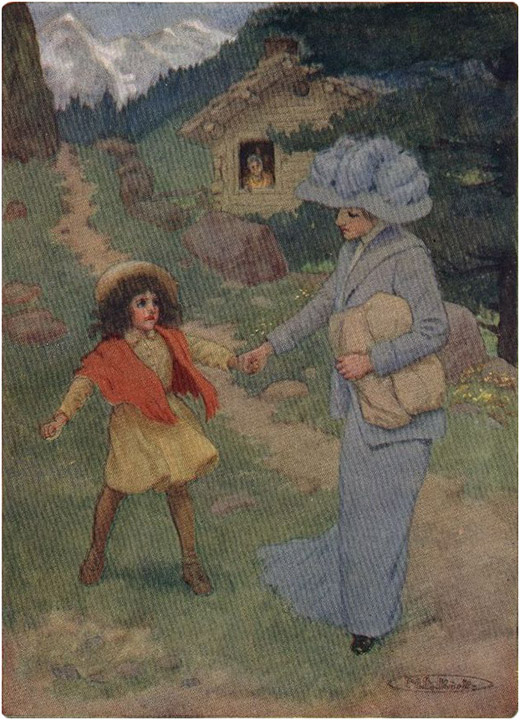
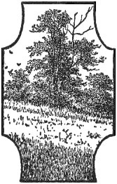

Dua musim dingin hampir berlalu. Heidi senang, karena musim semi akan datang lagi, dengan angin lembut yang menyenangkan yang membuat pohon-pohon cemara bergemuruh. Tak lama lagi dia bisa pergi ke padang rumput, di mana bunga-bunga biru dan kuning menyambutnya di setiap langkah. Usianya hampir delapan tahun, dan dia telah belajar merawat kambing-kambing, yang berlari mengejarnya seperti anjing kecil. Beberapa kali guru desa telah mengirim pesan melalui Peter bahwa anak itu dibutuhkan di sekolah, tetapi lelaki tua itu tidak memperhatikan pesan tersebut dan tetap menjaganya seperti sebelumnya. Pagi itu indah di bulan Maret. Salju telah mencair di lereng, dan cepat menghilang. Bunga-bunga salju mulai muncul dari tanah, yang tampaknya bersiap untuk musim semi. Heidi berlarian ke sana kemari di depan pintu, ketika tiba-tiba dia melihat seorang lelaki tua, berpakaian hitam, berdiri di sampingnya. Karena dia tampak ketakutan, lelaki itu berkata dengan ramah: "Kamu tidak perlu takut padaku, karena aku menyayangi anak-anak. Ulurkan tanganmu, Heidi, dan katakan padaku di mana kakekmu berada."
"Dia ada di dalam, sedang membuat sendok kayu bundar," jawab anak itu sambil membuka pintu saat berbicara.
Dia adalah pendeta tua desa itu, yang sudah mengenal kakek itu bertahun-tahun yang lalu. Setelah masuk, dia mendekati lelaki tua itu dan berkata: "Selamat pagi, tetangga."
Pria tua itu bangkit, terkejut, dan menawarkan tempat duduk kepada tamu tersebut, lalu berkata: "Selamat pagi, Tuan Pendeta. Ini kursi kayu, kalau boleh."
Sambil duduk, pendeta itu berkata: "Sudah lama saya tidak bertemu denganmu, tetangga. Saya datang hari ini untuk membicarakan suatu masalah denganmu. Saya yakin kamu bisa menebak tentang apa itu."
Pendeta di sini menatap Heidi, yang berdiri di dekat pintu.
"Heidi, larilah keluar untuk melihat kambing-kambing itu," kata kakeknya, "dan bawakan mereka garam; kamu boleh tinggal di sini sampai aku datang."
Heidi menghilang seketika. "Anak itu seharusnya sudah bersekolah setahun yang lalu," lanjut pendeta itu. "Apakah Anda tidak menerima peringatan dari guru? Apa yang akan Anda lakukan dengan anak itu?"
"Aku tidak mau dia pergi ke sekolah," kata lelaki tua itu dengan nada tak kenal ampun.
"Kamu ingin anak itu menjadi apa?"
"Aku ingin dia bebas dan bahagia seperti burung!"
"Tapi dia manusia, dan sudah saatnya dia belajar sesuatu. Aku datang sekarang untuk memberitahumu tentang hal ini, agar kau bisa membuat rencana. Dia harus bersekolah musim dingin mendatang; ingat itu."
"Saya tidak akan melakukannya, pendeta!" jawabnya.
"Apakah menurutmu tidak ada jalan keluar?" jawab pendeta itu, sedikit ketus. "Kau tahu dunia, karena kau telah berkelana jauh. Betapa dangkalnya pemikiranmu!"
"Kau pikir aku akan mengirim anakku yang lemah ini ke sekolah dalam setiap badai dan cuaca buruk!" kata lelaki tua itu dengan bersemangat. "Jaraknya dua jam berjalan kaki, dan aku tidak akan membiarkannya pergi; karena angin sering menderu begitu kencang sehingga mencekikku jika aku keluar. Apakah kau mengenal Adelheid, ibunya? Dia seorang pengidap gangguan tidur berjalan, dan sering pingsan. Tidak seorang pun akan memaksaku untuk membiarkannya pergi; aku akan dengan senang hati memperjuangkannya di pengadilan."
"Anda benar sekali," kata pendeta itu dengan ramah. "Anda tidak bisa menyekolahkan anak Anda dari sini. Mengapa Anda tidak datang dan tinggal di antara kami lagi? Anda menjalani kehidupan yang aneh di sini; saya heran bagaimana Anda bisa menghangatkan anak itu di musim dingin."
"Dia masih muda dan memiliki penyamaran yang baik. Aku tahu di mana menemukan kayu yang bagus, dan sepanjang musim dingin aku selalu menyalakan api. Aku tidak bisa tinggal di desa, karena orang-orang di sana dan aku saling membenci; lebih baik kita berpisah."
"Kamu keliru, aku jamin! Berdamailah dengan Tuhan, dan kemudian kamu akan melihat betapa bahagianya kamu."
Pendeta itu berdiri, dan sambil mengulurkan tangannya, ia berkata dengan ramah: "Aku akan mengandalkanmu musim dingin mendatang, tetangga. Kami akan menerimamu dengan senang hati, berdamai dengan Tuhan dan manusia."
Namun sang paman menjawab dengan tegas sambil menjabat tangan tamunya: "Terima kasih atas kebaikan Anda, tetapi Anda harus menunggu dengan sia-sia."
"Semoga Tuhan menyertaimu," kata pendeta itu, lalu meninggalkannya dengan sedih.
Lelaki tua itu sedang murung hari itu, dan ketika Heidi memohon untuk pergi ke rumah neneknya, dia hanya menggeram: "Tidak hari ini." Keesokan harinya, mereka hampir belum selesai makan malam ketika seorang tamu lain datang. Itu adalah bibi Heidi, Deta; dia mengenakan topi berbulu dan gaun dengan ekor yang begitu panjang sehingga menyapu semua yang tergeletak di lantai pondok. Sementara pamannya menatapnya dalam diam, Deta mulai memujinya dan pipi merah anak itu. Dia mengatakan kepadanya bahwa dia tidak bermaksud meninggalkan Heidi bersamanya lama, karena dia tahu dia pasti akan mengganggunya. Dia telah mencoba mencari tempat lain untuk anak itu, dan akhirnya dia menemukan kesempatan yang luar biasa untuknya. Kerabat yang sangat kaya dari majikannya, yang memiliki rumah terbesar di Frankfurt, memiliki seorang putri yang pincang. Gadis kecil yang malang ini terkurung di kursi rodanya dan membutuhkan teman dalam pelajarannya. Deta telah mendengar dari majikannya bahwa dibutuhkan seorang anak yang manis dan unik sebagai teman bermain dan teman sekolah untuk anak yang sakit itu. Dia pergi ke pengurus rumah tangga dan menceritakan semuanya tentang Heidi. Wanita itu, yang senang dengan ide tersebut, menyuruhnya untuk segera menjemput anak itu. Anak itu telah datang sekarang, dan itu adalah kesempatan yang beruntung bagi Heidi, "karena orang tidak pernah tahu apa yang mungkin terjadi dalam kasus seperti itu, dan siapa yang bisa tahu—"
"Apakah kau sudah selesai?" akhirnya lelaki tua itu menyela perkataannya.
"Wah, orang mungkin mengira saya sedang menceritakan hal-hal yang paling konyol. Tidak ada seorang pun di Prätiggan yang tidak akan bersyukur kepada Tuhan atas berita seperti ini."
"Bawalah mereka ke orang lain, jangan ke aku," kata sang paman dengan dingin.
Deta, dengan amarah yang meluap, menjawab: "Apakah kau ingin mendengar apa yang kupikirkan? Tidakkah aku tahu berapa umurnya; delapan tahun dan tidak tahu apa-apa. Mereka memberitahuku bahwa kau menolak untuk menyekolahkannya ke gereja dan sekolah. Dia adalah anak satu-satunya saudara perempuanku, dan aku tidak akan menanggungnya, karena aku bertanggung jawab. Kau tidak peduli padanya , bagaimana mungkin kau acuh tak acuh terhadap nasib seperti itu. Lebih baik kau mengalah atau aku akan meminta orang-orang untuk mendukungku. Jika aku jadi kau, aku tidak akan membawanya ke pengadilan; beberapa hal mungkin akan terungkap yang tidak ingin kau dengar."
"Diam!" bentak sang paman dengan mata menyala-nyala. "Bawa dia dan hancurkan dia, tapi jangan pernah bawa dia ke hadapanku lagi. Aku tidak ingin melihatnya dengan bulu di topinya dan kata-kata jahat seperti milikmu."
Dengan langkah panjang, dia keluar.
"Kau telah membuatnya marah!" kata Heidi dengan tatapan geram.
"Dia tidak akan marah lama. Tapi ayo, di mana barang-barangmu?" tanya Deta.
"Aku tidak akan datang," jawab Heidi.
"Apa?" kata Deta dengan penuh semangat. Namun, mengubah nadanya dan melanjutkan dengan lebih ramah: "Ayo, Nak; kau tidak mengerti maksudku. Aku akan membawamu ke tempat terindah yang pernah kau lihat." Setelah mengemasi pakaian Heidi, dia berkata lagi, "Ayo, Nak, dan pakailah topimu. Memang tidak terlalu bagus, tapi kita tidak bisa berbuat apa-apa."
"Aku tidak akan datang," jawabnya.
"Jangan bodoh dan keras kepala, seperti kambing. Dengarkan aku. Kakek akan mengirim kita pergi dan kita harus melakukan apa yang dia perintahkan, atau dia akan semakin marah . Kalian akan lihat betapa indahnya Frankfurt. Jika kalian tidak menyukainya, kalian bisa pulang lagi dan saat itu kakek pasti sudah memaafkan kita."
"Bolehkah aku pulang lagi malam ini?" tanya Heidi.
"Ayolah, sudah kubilang kau bisa kembali. Kalau kita sampai di Mayenfeld hari ini, kita bisa naik kereta besok. Itu akan membuatmu terbang pulang lagi dalam waktu sesingkat mungkin!"
Sambil memegang bungkusan itu, Deta menuntun anak itu menuruni gunung. Dalam perjalanan, mereka bertemu Peter, yang tidak masuk sekolah hari itu. Bocah itu menganggap mencari ranting pohon hazel lebih bermanfaat daripada belajar membaca, karena ia selalu membutuhkan ranting-ranting itu. Ia telah menjalani hari yang sangat sukses, karena ia membawa bungkusan besar di pundaknya. Ketika ia melihat Heidi dan Deta, ia bertanya kepada mereka ke mana mereka akan pergi.
"Aku akan pergi ke Frankfurt bersama Bibi Deta," jawab Heidi; "tapi pertama-tama aku harus menemui nenek, karena dia sedang menunggu."
"Oh tidak, sudah terlambat. Kau bisa menemuinya saat kau kembali nanti, tapi tidak sekarang," kata Deta, sambil menarik Heidi bersamanya, karena ia takut wanita tua itu akan menahan anak tersebut.
Peter berlari ke dalam pondok dan memukul meja dengan tongkatnya. Nenek itu melompat kaget dan bertanya kepadanya apa artinya itu.
"Mereka telah membawa Heidi pergi," kata Peter sambil mengerang.
"Siapa yang membawanya, Peter? Ke mana dia pergi?" tanya nenek yang sedih itu. Brigida telah melihat Deta berjalan di jalan setapak beberapa saat yang lalu dan segera mereka menduga apa yang telah terjadi. Dengan tangan gemetar, wanita tua itu membuka jendela dan memanggil sekeras yang dia bisa: "Deta, Deta, jangan bawa anak itu pergi. Jangan bawa dia dari kami."
Ketika Heidi mendengar itu, dia berusaha melepaskan diri dan berkata, "Aku harus pergi ke nenek; dia memanggilku."
Namun Deta tidak membiarkannya pergi. Ia mendesaknya dengan mengatakan bahwa Heidi mungkin akan segera kembali. Ia juga menyarankan agar Heidi membawa hadiah yang indah untuk neneknya ketika ia kembali.
Heidi menyukai prospek ini dan mengikuti Deta tanpa ragu-ragu. Setelah beberapa saat, dia bertanya: "Apa yang harus kubawa untuk nenek?"
"Kamu bisa membawakannya roti putih yang lembut, Heidi. Kurasa roti hitam itu terlalu keras untuk dimakan nenekku."
"Ya, aku tahu, Bibi, dia selalu memberikannya kepada Peter," Heidi membenarkan. "Kita harus cepat pergi sekarang; kita mungkin bisa sampai ke Frankfurt hari ini dan kemudian aku bisa kembali besok dengan roti-rotinya."

KETIKA HEIDI MENDENGAR ITU, DIA BERJUANG UNTUK MENDAPATKANNYA SECARA GRATIS ToList
Heidi kini berlari, dan Deta harus mengikutinya. Ia cukup lega bisa terhindar dari pertanyaan-pertanyaan yang mungkin diajukan orang-orang di desa. Orang-orang bisa melihat Heidi menyeretnya, jadi ia berkata: "Aku tidak bisa berhenti. Tidakkah kalian lihat bagaimana anak ini berlari terburu-buru? Kita masih harus menempuh perjalanan jauh," setiap kali ia mendengar dari segala arah: "Apakah kau membawanya bersamamu?" "Apakah dia melarikan diri dari pamannya?" "Hebatnya dia masih hidup!" "Pipinya merah sekali," dan seterusnya. Tak lama kemudian mereka berhasil melarikan diri dan meninggalkan desa jauh di belakang mereka.
Sejak saat itu, paman itu tampak lebih marah dari sebelumnya setiap kali datang ke desa. Semua orang takut padanya, dan para wanita akan memperingatkan anak-anak mereka untuk menjauh darinya.
Ia jarang turun, dan itupun hanya untuk menjual keju dan membeli kebutuhan sehari-hari. Seringkali orang-orang berkomentar betapa beruntungnya Heidi meninggalkannya. Mereka melihat Heidi bergegas pergi, jadi mereka mengira Heidi senang pergi.
Hanya nenek tua itu yang tetap setia kepadanya. Setiap kali ada orang menghampirinya, dia akan menceritakan betapa baiknya kakek itu merawat Heidi. Dia juga memberi tahu mereka bahwa kakek itu telah memperbaiki rumah kecilnya. Laporan-laporan ini tentu saja sampai ke desa, tetapi orang-orang hanya setengah mempercayainya, karena nenek itu lemah dan tua. Dia memulai hari-harinya dengan menghela napas lagi. "Semua kebahagiaan telah meninggalkan kita bersama anak itu. Hari-hari terasa begitu panjang dan suram, dan aku tidak memiliki kegembiraan lagi. Seandainya saja aku bisa mendengar suara Heidi sebelum aku mati," wanita tua malang itu akan berseru, hari demi hari.
